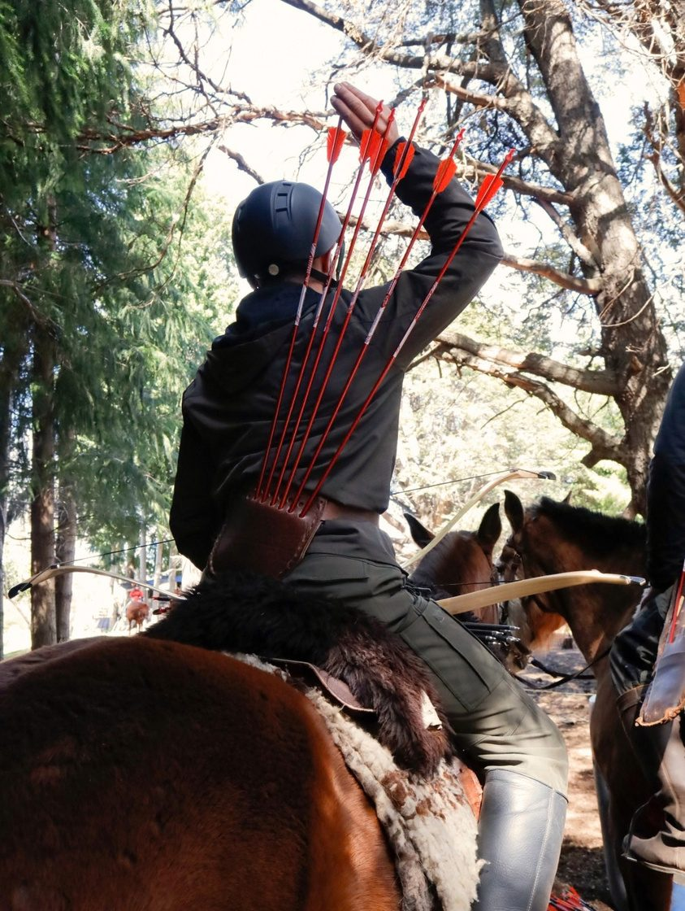

Clases
Cada clase cuenta con dos instructores y tiene como objetivo desarrollar un conocimiento amplio de la arquería y sus diferentes tradiciones, adquirir herramientas para montar y guiar al caballo con seguridad y confianza e integrar de manera natural ambos saberes.
Modalidades
Clases regulares: Martes y Jueves 18 a 20 hs - Sábados 14 a 16:30 hs
Clases intensivas: Programas de uno o más días, a coordinar. Ideal para quienes visitan la ciudad y quieren vivir la experiencia.
Arquería
Historia y tradiciones:
Recorrido por la evolución de la arquería y sus diferentes estilos y usos, con especial atención a las tradiciones orientales: turca, china, manchú y coreana, además de la arquería montada deportiva moderna.
Práctica:
Desarrollo de la carga rápida, disparo instintivo y fluido en movimiento, adaptación de distintas técnicas buscando estabilidad y precisión.
Equitación
Etología:
Comprender al caballo, su comportamiento y estados para relacionarnos con él desde el respeto y la asertividad. Aspectos de cuidado general, montura, biomecánica, preparación previa, alimentación y todo lo que hace a la salud equina.
Práctica:
Monta a pelo y con montura, desarrollo progresivo de los tres aires y técnicas específicas de arquería montada.
